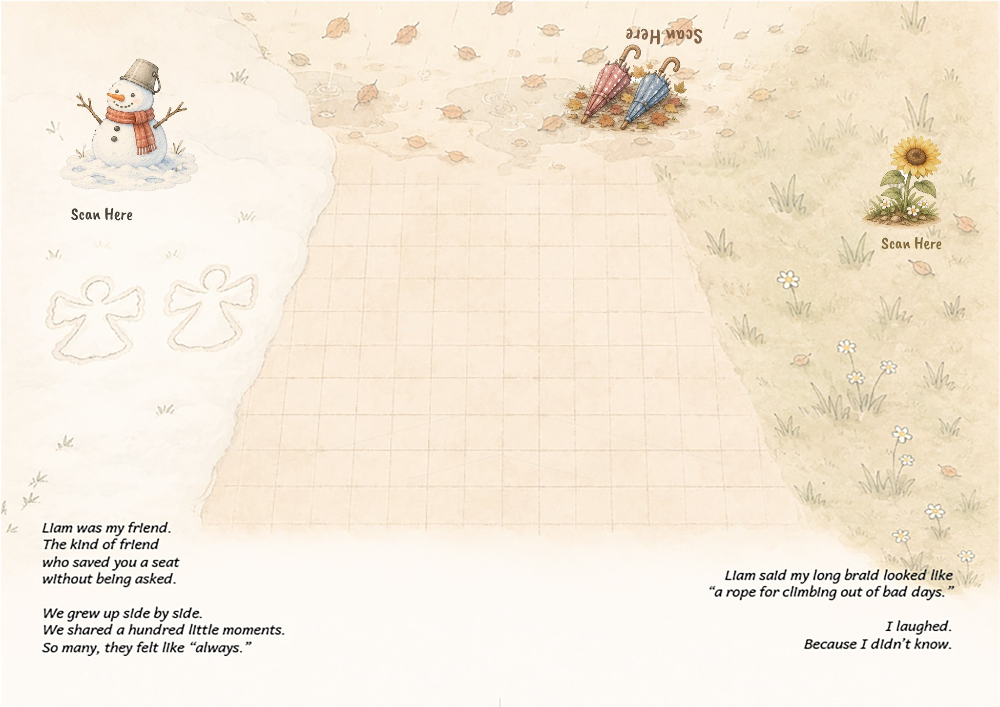
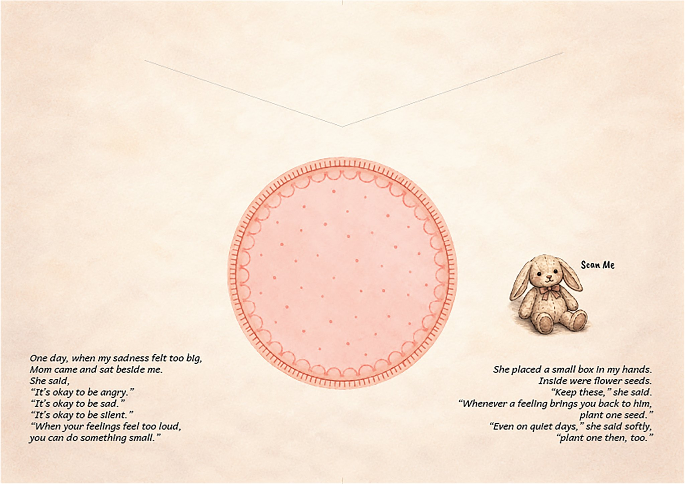
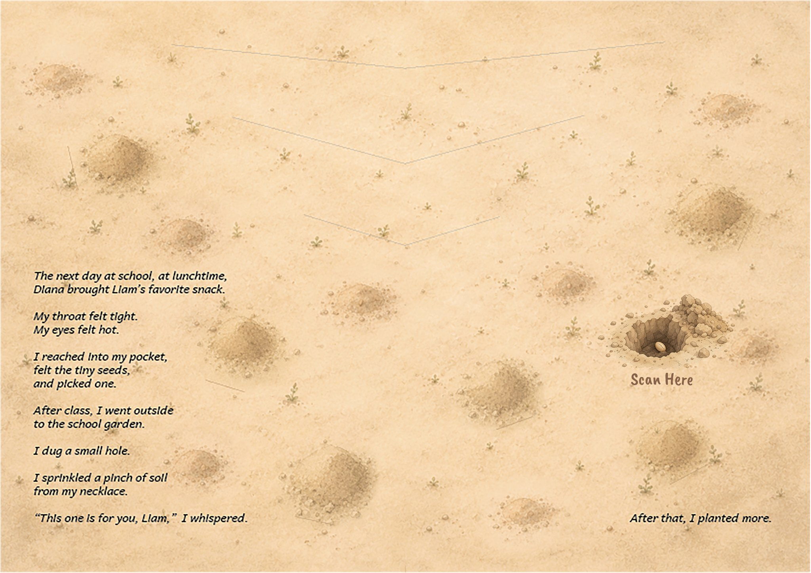
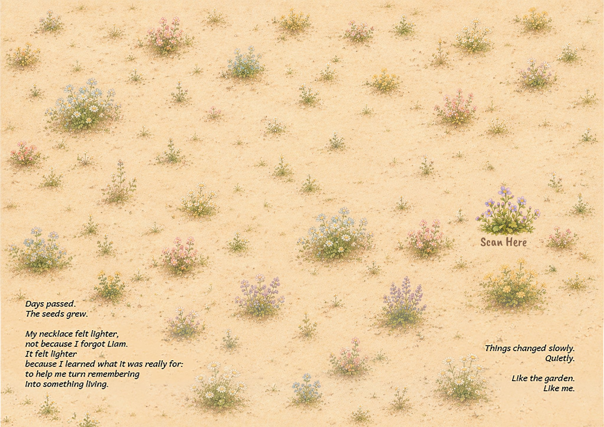

Test pages
Show one of these pages full-screen on a computer (or print it on A3/A4) and point your phone at its Scan Here icon in Scan the Book. The memory appears on the page exactly where it belongs.



